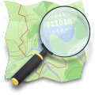

Sebastian Gomez Biggeri

Personal data
| Argentina, 1986 |
| hello@sbiggeri.com |
| San Jose, CA, USA |
| Spanish, English, French |
| Portfolio |
| Personal Work |
Knowledge keywords
| Branding Data Visualization Content Creation Campaign Strategy Typography Product Design Printing Processes Outsource Coordination Concept Art Environment Design Asset Production Promotional Illustration Character Design Digital Painting Modeling Texturing Lighting Animation Low & Hi Poly Sculpting Matte Painting Compositing Keying Rotoscoping Tracking Editing Coloring Motion Graphics Storyboarding Animatic PostGIS Mapnik CartoCSS OpenLayers Leaflet Gulp Grunt Bower Webpack Meteor |
| Automation REST JSON JWT XML Semantic Web XMPP |
| FLOSS Open Data Linked Data Shell Scripting Open Standards OAuth Neocartography Cryptocurrencies Blockchain Sidechains Smart Contracts |
| Knowledge eager! |
Conferences / Speaker
|
Experience
House of Chef TV2016 - Present |
| CTO & Dev: House of Chef is an entertainment streaming media company that produces and deliver high quality niche content. I developed and mantain the platform based in AWS, node.js, express.js and best practices to ensure high availability, state of the art transcoding, fast content delivery, multilanguage features, load balancing, and fully automated processes and scalability. (houseofchef.online) |
Torguen2015 - Present |
| Co-founder, CTO: Torguen is an access control board fully designed and manufactured in Argentina, with RFID capabilities, along with a killer open source web app with state of the art security. Currently working on it's integration with blockchain technology. (torguen.com.ar) |
Shovel Apps2015 |
| Consultant, development: At this project we successfully implemented and designed an open source CMS for mobile apps, with a SaaS model as well as a self-hosted downloadable version. (shovelapps.com) |
Entornos Educativos2014 - 2015 |
| Engineer: Infraestructure optimization and large data maneuvering on e-learning projects for first line companies.(entornos.com.ar) |
State of the Map 2014 - stateofthemap.org2014 |
| Website for State of the Map, the annual conference of OpenStreetMap. Organised by the OpenStreetMap Foundation it has been held each year since 2007. (github.com/osm-ar/libreconf) |

Turismocity.com - Grupo DC S.A.2013 - 2014 |
| Full-stack developer: Realtime flight tickets scrapers (nodejs), API (nodejs, redis), configuration backend (php/mysql) and frontend (html, backbone.js). Turismocity.com is a startup aiming to become a flight tickets meta search engine leader in latam, but multilanguage and with presence in other continents. (turismocity.com) |

OpenStreetMap.org.ar2013 - Present |
| I founded the Argentine chapter for OpenStreetMap. I fully deployed and mantain the infrastructure. The main goal is to localize the OSM cartography and symbology for the local public. (github.com/osm-ar/) |
Freelance developer and consultant (Costa Rica)2007 |
| During this time I worked on personal projects and did some freelancing. |
Akbar Soluciones S.A. (Costa Rica)2006 |
| Developed app for invoicing, stock management, accounting. Also some server administration. |

PowerSite S.A.2005 - 2006 |
| Developed several web apps, server deployment and maintenance. I gained a lot of experience and professionalism during my time at PowerSite, until I was offered a job in Costa Rica. (powersite.com.ar) |
Taringa.net2004 - 2007 |
| I founded and fully mantained the most popular Latin American social network called Taringa! Until I sold it in 2007. (taringa.net) |
Freelance developer2003 - 2005 |
| I started coding when I was 14 years old as a hobby, I began to work as programmer when I was 17. |